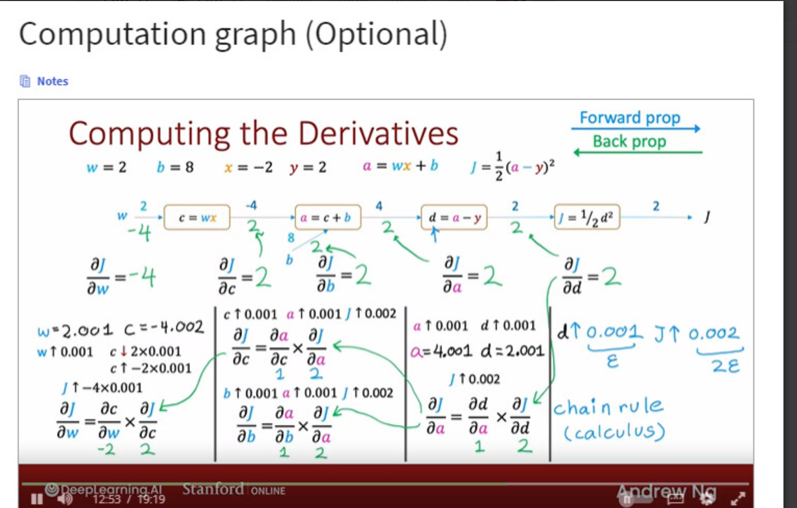

Code
from sympy import *
import numpy as np
import re
%matplotlib widget
import matplotlib.pyplot as plt
from matplotlib.widgets import TextBox
from matplotlib.widgets import Button
import ipywidgets as widgets
from lab_utils_backprop import *kakamana
May 9, 2023
This describes compute graphs and their use in back propagation. Working through this lab will give you insight into a key algorithm used by most machine learning frameworks. Gradient descent requires the derivative of the cost with respect to each parameter in the network. Neural networks can have millions or even billions of parameters. The back propagation algorithm is used to compute those derivatives. Computation graphs are used to simplify the operation.
This Back Propagation is part of DeepLearning.AI course: Machine Learning Specialization / Course 2: Advanced Learning Algorithms: Back propagation You will build and train a neural network with TensorFlow to perform multi-class classification in the second course of the Machine Learning Specialization. Ensure that your machine learning models are generalizable by applying best practices for machine learning development. You will build and train a neural network using TensorFlow to perform multi-class classification in the second course of the Machine Learning Specialization. Implement best practices for machine learning development to ensure that your models are generalizable to real-world data and tasks. Create and use decision trees and tree ensemble methods, including random forests and boosted trees.
This is my learning experience of data science through DeepLearning.AI. These repository contributions are part of my learning journey through my graduate program masters of applied data sciences (MADS) at University Of Michigan, DeepLearning.AI, Coursera & DataCamp. You can find my similar articles & more stories at my medium & LinkedIn profile. I am available at kaggle & github blogs & github repos. Thank you for your motivation, support & valuable feedback.
These include projects, coursework & notebook which I learned through my data science journey. They are created for reproducible & future reference purpose only. All source code, slides or screenshot are intellectual property of respective content authors. If you find these contents beneficial, kindly consider learning subscription from DeepLearning.AI Subscription, Coursera, DataCamp
A computation graph simplifies the computation of complex derivatives by breaking them into smaller steps. Let’s see how this works.
Let’s calculate the derivative of this slightly complex expression, \(J = (2+3w)^2\). We would like to find the derivative of \(J\) with respect to \(w\) or \(\frac{\partial J}{\partial w}\).
<lab_utils_backprop.plt_network at 0x1771b5b7ca0>Let’s calculate the values in the forward direction.
Just a note about this section. It uses global variables and reuses them as the calculation progresses. If you run cells out of order, you may get funny results. If you do, go back to this point and run them in order.
Backprop is the algorithm we use to calculate derivatives. As described in the lectures, backprop starts at the right and moves to the left. The first node to consider is $J = a^2 $ and the first step is to find \(\frac{\partial J}{\partial a}\)
Find \(\frac{\partial J}{\partial a}\) by finding how \(J\) changes as a result of a little change in \(a\). This is described in detail in the derivatives optional lab.
J = 121, J_epsilon = 121.02200099999999, dJ_da ~= k = 22.000999999988835 \(\frac{\partial J}{\partial a}\) is 22 which is \(2\times a\). Our result is not exactly \(2 \times a\) because our epsilon value is not infinitesimally small. #### Symbolically Now, let’s use SymPy to calculate derivatives symbolically as we did in the derivatives optional lab. We will prefix the name of the variable with an ‘s’ to indicate this is a symbolic variable.
So, \(\frac{\partial J}{\partial a} = 2a\). When \(a=11\), \(\frac{\partial J}{\partial a} = 22\). This matches our arithmetic calculation above. If you have not already done so, you can go back to the diagram above and fill in the value for \(\frac{\partial J}{\partial a}\).
Moving from right to left, the next value we would like to compute is \(\frac{\partial J}{\partial w}\). To do this, we first need to calculate \(\frac{\partial a}{\partial w}\) which describes how the output of this node, \(a\), changes when the input \(w\) changes a little bit.
Find \(\frac{\partial a}{\partial w}\) by finding how \(a\) changes as a result of a little change in \(w\).
Calculated arithmetically, \(\frac{\partial a}{\partial w} \approx 3\). Let’s try it with SymPy.
The next step is the interesting part: - We know that a small change in \(w\) will cause \(a\) to change by 3 times that amount. - We know that a small change in \(a\) will cause \(J\) to change by \(2\times a\) times that amount. (a=11 in this example) so, putting these together, - We know that a small change in \(w\) will cause \(J\) to change by \(3 \times 2\times a\) times that amount.
These cascading changes go by the name of the chain rule. It can be written like this: \[\frac{\partial J}{\partial w} = \frac{\partial a}{\partial w} \frac{\partial J}{\partial a} \]
It’s worth spending some time thinking this through if it is not clear. This is a key take-away.
Let’s try calculating it:
And \(a\) is 11 in this example so \(\frac{\partial J}{\partial w} = 66\). We can check this arithmetically:
And \(a\) is 11 in this example so \(\frac{\partial J}{\partial w} = 66\). We can check this arithmetically:
J = 121, J_epsilon = 121.06600900000001, dJ_dw ~= k = 66.0090000000082 Another view One could visualize these cascading changes this way: A small change in \(w\) is multiplied by \(\frac{\partial a}{\partial w}\) resulting in a change that is 3 times as large. This larger change is then multiplied by \(\frac{\partial J}{\partial a}\) resulting in a change that is now \(3 \times 22 = 66\) times larger.
Below is a graph of the neural network used in the lecture with different values. Try and fill in the values in the boxes. Note, the interactive graphic is not particularly robust. If you run into trouble with the interface, run the cell below again to restart.

Below, we will go through the computations required to fill in the above computation graph in detail. We start with the forward path.
The calculations in the forward path are the ones you have recently learned for neural networks. You can compare the values below to those you calculated for the diagram above.
As described in the lectures, backprop starts at the right and moves to the left. The first node to consider is $J = d^2 $ and the first step is to find \(\frac{\partial J}{\partial d}\)
Find \(\frac{\partial J}{\partial d}\) by finding how \(J\) changes as a result of a little change in \(d\).
J = 4.5, J_epsilon = 4.5030005, dJ_dd ~= k = 3.0004999999997395 \(\frac{\partial J}{\partial d}\) is 3, which is the value of \(d\). Our result is not exactly \(d\) because our epsilon value is not infinitesimally small. #### Symbolically Now, let’s use SymPy to calculate derivatives symbolically, as we did in the derivatives optional lab. We will prefix the name of the variable with an ‘s’ to indicate this is a symbolic variable.
So, \(\frac{\partial J}{\partial d}\) = d. When \(d=3\), \(\frac{\partial J}{\partial d}\) = 3. This matches our arithmetic calculation above. If you have not already done so, you can go back to the diagram above and fill in the value for \(\frac{\partial J}{\partial d}\).
Moving from right to left, the next value we would like to compute is \(\frac{\partial J}{\partial a}\). To do this, we first need to calculate \(\frac{\partial d}{\partial a}\) which describes how the output of this node changes when the input \(a\) changes a little bit. (Note, we are not interested in how the output changes when \(y\) changes since \(y\) is not a parameter.)
Find \(\frac{\partial d}{\partial a}\) by finding how \(d\) changes as a result of a little change in \(a\).
d = 3, d_epsilon = 3.0010000000000003, dd_da ~= k = 1.000000000000334 Calculated arithmetically, \(\frac{\partial d}{\partial a} \approx 1\). Let’s try it with SymPy. #### Symbolically
Calculated arithmetically, \(\frac{\partial d}{\partial a}\) also equals 1. >The next step is the interesting part, repeated again in this example: > - We know that a small change in \(a\) will cause \(d\) to change by 1 times that amount. > - We know that a small change in \(d\) will cause \(J\) to change by \(d\) times that amount. (d=3 in this example) so, putting these together, > - We know that a small change in \(a\) will cause \(J\) to change by \(1\times d\) times that amount. > >This is again the chain rule. It can be written like this: \[\frac{\partial J}{\partial a} = \frac{\partial d}{\partial a} \frac{\partial J}{\partial d} \]
Let’s try calculating it:
And \(d\) is 3 in this example so \(\frac{\partial J}{\partial a} = 3\). We can check this arithmetically:
J = 4.5, J_epsilon = 4.503000500000001, dJ_da ~= k = 3.0005000000006277 OK, they match! You can now fill the values for \(\frac{\partial d}{\partial a}\) and \(\frac{\partial J}{\partial a}\) in the diagram if you have not already done so.
The steps in backprop Now that you have worked through several nodes, we can write down the basic method:
working right to left, for each node: - calculate the local derivative(s) of the node - using the chain rule, combine with the derivative of the cost with respect to the node to the right.
The ‘local derivative(s)’ are the derivative(s) of the output of the current node with respect to all inputs or parameters.
Let’s continue the job. We’ll be a bit less verbose now that you are familiar with the method.
The next node has two derivatives of interest. We need to calculate \(\frac{\partial J}{\partial c}\) so we can propagate to the left. We also want to calculate \(\frac{\partial J}{\partial b}\). Finding the derivative of the cost with respect to the parameters \(w\) and \(b\) is the object of backprop. We will find the local derivatives, \(\frac{\partial a}{\partial c}\) and \(\frac{\partial a}{\partial b}\) first and then combine those with the derivative coming from the right, \(\frac{\partial J}{\partial a}\).
dJ_dc = d, dJ_db = dAnd in our example, d = 3
The last node in this example calculates c. Here, we are interested in how J changes with respect to the parameter w. We will not back propagate to the input \(x\), so we are not interested in \(\frac{\partial J}{\partial x}\). Let’s start by calculating \(\frac{\partial c}{\partial w}\).
This derivative is a bit more exciting than the last one. This will vary depending on the value of \(x\). This is 2 in our example.
Combine this with \(\frac{\partial J}{\partial c}\) to find \(\frac{\partial J}{\partial w}\).
\(d=3\), so \(\frac{\partial J}{\partial w} = 6\) for our example. Let’s test this arithmetically: